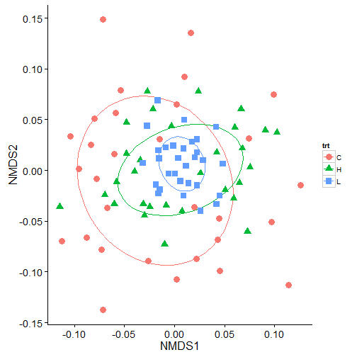
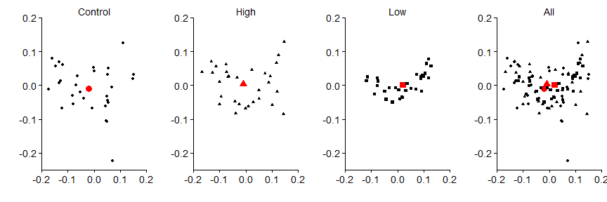
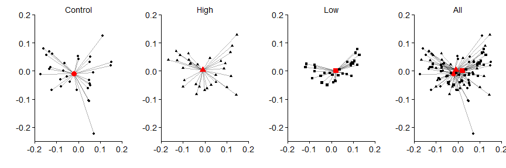
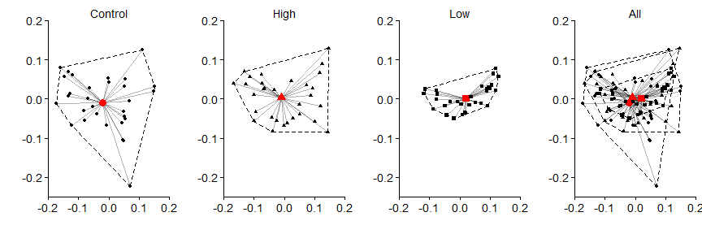

Permutational multivariate analysis of variance using distance matrices (adonis)
The RMarkdown source to this file can be found here
Wow! I did not realize that it has been a full three months since I have last done a post on here.
I have done several posts on how to plot several different processes with ggplot2 and this one will yet again fall into this category. Back in April I posted about how to plot NMDS plots from the vegan package in ggplot2. Another powerful function in the vegan package, is adonis(). adonis allows you to do permutational multivariate analysis of variance using distance matrices.
Recently, a graduate student recently asked me why adonis() was giving significant results between factors even though, when looking at the NMDS plot, there was little indication of strong differences in the confidence ellipses. So I thought I would create a little post illustrating what adonis is partly doing and how to visually represent what was being done in the analysis, in hopes to illustrate why significant differences were found.
Creating the data
First lets create some data. We will create three sets of sites (30 sites, 10 species) for each of three treatments. The number of individuals for each species in a site will be drawn from a negative binomial distribution using rnbinom() using the a similar mean number of species but allowing the dispersion parameter to be different. Note: This data was created just to illustrate this post and I am sure it could be done better to illustrate actual ecological data and provide better NMDS fits.
set.seed(123456789)
num<-30
disp.a<-5
sites.a<-data.frame(sp.a=rnbinom(num,mu = 40, size = disp.a),
sp.b=rnbinom(num,mu = 60, size = disp.a),
sp.c=rnbinom(num,mu = 50, size = disp.a),
sp.d=rnbinom(num,mu = 70, size = disp.a),
sp.e=rnbinom(num,mu = 10, size = disp.a),
sp.f=rnbinom(num,mu = 180, size = disp.a),
sp.g=rnbinom(num,mu = 100, size = disp.a),
sp.h=rnbinom(num,mu = 80, size = disp.a),
sp.i=rnbinom(num,mu = 40, size = disp.a),
sp.j=rnbinom(num,mu = 50, size = disp.a))
disp.b<-50
sites.b<-data.frame(sp.a=rnbinom(num,mu = 40, size = disp.a),
sp.b=rnbinom(num,mu = 60, size = disp.b),
sp.c=rnbinom(num,mu = 50, size = disp.a),
sp.d=rnbinom(num,mu = 70, size = disp.b),
sp.e=rnbinom(num,mu = 10, size = disp.a),
sp.f=rnbinom(num,mu = 180, size = disp.a),
sp.g=rnbinom(num,mu = 100, size = disp.b),
sp.h=rnbinom(num,mu = 80, size = disp.a),
sp.i=rnbinom(num,mu = 40, size = disp.b),
sp.j=rnbinom(num,mu = 50, size = disp.a))
disp.c<-200
sites.c<-data.frame(sp.a=rnbinom(num,mu = 40, size = disp.a),
sp.b=rnbinom(num,mu = 60, size = disp.b),
sp.c=rnbinom(num,mu = 50, size = disp.c),
sp.d=rnbinom(num,mu = 70, size = disp.b),
sp.e=rnbinom(num,mu = 10, size = disp.c),
sp.f=rnbinom(num,mu = 180, size = disp.a),
sp.g=rnbinom(num,mu = 100, size = disp.b),
sp.h=rnbinom(num,mu = 80, size = disp.c),
sp.i=rnbinom(num,mu = 40, size = disp.b),
sp.j=rnbinom(num,mu = 50, size = disp.c))
all.sites<-rbind(sites.a,sites.b,sites.c)
trt<-rep(c("C","H","L"),each=nrow(sites.a))Running an NMDS
Then we can run this through metaMDS and plot it in ggplot using stat_ellipse to generate the confidence ellipses.
library(vegan)
library(ggplot2)
library(grid)
all.mds <- metaMDS(all.sites) #using all the defaults## Square root transformation
## Wisconsin double standardization
## Run 0 stress 0.2650943
## Run 1 stress 0.2680585
## Run 2 stress 0.2648514
## ... New best solution
## ... procrustes: rmse 0.06298445 max resid 0.244192
## Run 3 stress 0.2640097
## ... New best solution
## ... procrustes: rmse 0.07531341 max resid 0.2861196
## Run 4 stress 0.2646814
## Run 5 stress 0.2675274
## Run 6 stress 0.2773219
## Run 7 stress 0.2663498
## Run 8 stress 0.2674223
## Run 9 stress 0.2776589
## Run 10 stress 0.2650576
## Run 11 stress 0.2832777
## Run 12 stress 0.2738943
## Run 13 stress 0.2797539
## Run 14 stress 0.2705419
## Run 15 stress 0.2705508
## Run 16 stress 0.2881442
## Run 17 stress 0.2640104
## ... procrustes: rmse 0.001211731 max resid 0.008448712
## *** Solution reacheddata.scores <- as.data.frame(scores(all.mds))
data.scores$site <- rownames(data.scores)
data.scores$grp<-trt
ggplot(data=data.scores) +
stat_ellipse(aes(x=NMDS1,y=NMDS2,colour=trt),level = 0.50) +
geom_point(aes(x=NMDS1,y=NMDS2,shape=trt,colour=trt),size=4) +
theme_mine()
adonis
In the above plot, we can see a lot of overlap in the 50% ellipses and the centroids are not that different suggesting that the groups are not that different. But, running the same data in adonis indicates that there are significant differences in the treatments.
adon.results<-adonis(all.sites ~ trt, method="bray",perm=999)
print(adon.results)##
## Call:
## adonis(formula = all.sites ~ trt, permutations = 999, method = "bray")
##
## Terms added sequentially (first to last)
##
## Df SumsOfSqs MeanSqs F.Model R2 Pr(>F)
## trt 2 0.08327 0.041635 1.9988 0.04393 0.018 *
## Residuals 87 1.81222 0.020830 0.95607
## Total 89 1.89549 1.00000
## ---
## Signif. codes: 0 '***' 0.001 '**' 0.01 '*' 0.05 '.' 0.1 ' ' 1So why do we get a significant value from adonis? adonis works by first finding the centroids for each group and then calculates the squared deviations of each of site to that centroid. Then significance tests are performed using F-tests based on sequential sums of squares from permutations of the raw data.
A good way to see why we are getting differences by plotting this out. The process is to calculate this distance matrix for the data using the vegdist function and then calculate the multivariate homogeneity of group dispersions (variances) using betadisper. For more information on the process behind this read the Details from help(betadisper).
## Bray-Curtis distances between samples
dis <- vegdist(all.sites)
## Calculate multivariate dispersions
mod <- betadisper(dis, trt)
mod##
## Homogeneity of multivariate dispersions
##
## Call: betadisper(d = dis, group = trt)
##
## No. of Positive Eigenvalues: 36
## No. of Negative Eigenvalues: 53
##
## Average distance to median:
## C H L
## 0.1635 0.1395 0.1050
##
## Eigenvalues for PCoA axes:
## PCoA1 PCoA2 PCoA3 PCoA4 PCoA5 PCoA6 PCoA7 PCoA8
## 0.7084 0.2641 0.1971 0.1648 0.1464 0.1401 0.1301 0.1257Visualizing the multivariate homogeneity of group dispersions
We can then plot this out in steps so it is easier to visualize. First, I will extract the data and get it in a forma that ggplot2 can use.
# extract the centroids and the site points in multivariate space.
centroids<-data.frame(grps=rownames(mod$centroids),data.frame(mod$centroids))
vectors<-data.frame(group=mod$group,data.frame(mod$vectors))
# to create the lines from the centroids to each point we will put it in a format that ggplot can handle
seg.data<-cbind(vectors[,1:3],centroids[rep(1:nrow(centroids),as.data.frame(table(vectors$group))$Freq),2:3])
names(seg.data)<-c("group","v.PCoA1","v.PCoA2","PCoA1","PCoA2")
# create the convex hulls of the outermost points
grp1.hull<-seg.data[seg.data$group=="C",1:3][chull(seg.data[seg.data$group=="C",2:3]),]
grp2.hull<-seg.data[seg.data$group=="H",1:3][chull(seg.data[seg.data$group=="H",2:3]),]
grp3.hull<-seg.data[seg.data$group=="L",1:3][chull(seg.data[seg.data$group=="L",2:3]),]
all.hull<-rbind(grp1.hull,grp2.hull,grp3.hull)I will use grid.arrange from gridExtra to create display each treatment seperately and then have a combined panel.
First points (black symbols) and the centroids (red symbols).
library(gridExtra)
panel.a<-ggplot() +
geom_point(data=centroids[1,1:3], aes(x=PCoA1,y=PCoA2),size=4,colour="red",shape=16) +
geom_point(data=seg.data[1:30,], aes(x=v.PCoA1,y=v.PCoA2),size=2,shape=16) +
labs(title="Control",x="",y="") +
coord_cartesian(xlim = c(-0.2,0.2), ylim = c(-0.25,0.2)) +
theme_mine() +
theme(legend.position="none")
panel.b<-ggplot() +
geom_point(data=centroids[2,1:3], aes(x=PCoA1,y=PCoA2),size=4,colour="red",shape=17) +
geom_point(data=seg.data[31:60,], aes(x=v.PCoA1,y=v.PCoA2),size=2,shape=17) +
labs(title="High",x="",y="") +
coord_cartesian(xlim = c(-0.2,0.2), ylim = c(-0.25,0.2)) +
theme_mine() +
theme(legend.position="none")
panel.c<-ggplot() +
geom_point(data=centroids[3,1:3], aes(x=PCoA1,y=PCoA2),size=4,colour="red",shape=15) +
geom_point(data=seg.data[61:90,], aes(x=v.PCoA1,y=v.PCoA2),size=2,shape=15) +
labs(title="Low",x="",y="") +
coord_cartesian(xlim = c(-0.2,0.2), ylim = c(-0.25,0.2)) +
theme_mine() +
theme(legend.position="none")
panel.d<-ggplot() +
geom_point(data=centroids[,1:3], aes(x=PCoA1,y=PCoA2,shape=grps),size=4,colour="red") +
geom_point(data=seg.data, aes(x=v.PCoA1,y=v.PCoA2,shape=group),size=2) +
labs(title="All",x="",y="") +
coord_cartesian(xlim = c(-0.2,0.2), ylim = c(-0.25,0.2)) +
theme_mine() +
theme(legend.position="none")
grid.arrange(panel.a,panel.b,panel.c,panel.d,nrow=1)
Then the vector segments
panel.a<-ggplot() +
geom_segment(data=seg.data[1:30,],aes(x=v.PCoA1,xend=PCoA1,y=v.PCoA2,yend=PCoA2),alpha=0.30) +
geom_point(data=centroids[1,1:3], aes(x=PCoA1,y=PCoA2),size=4,colour="red",shape=16) +
geom_point(data=seg.data[1:30,], aes(x=v.PCoA1,y=v.PCoA2),size=2,shape=16) +
labs(title="Control",x="",y="") +
coord_cartesian(xlim = c(-0.2,0.2), ylim = c(-0.25,0.2)) +
theme_mine() +
theme(legend.position="none")
panel.b<-ggplot() +
geom_segment(data=seg.data[31:60,],aes(x=v.PCoA1,xend=PCoA1,y=v.PCoA2,yend=PCoA2),alpha=0.30) +
geom_point(data=centroids[2,1:3], aes(x=PCoA1,y=PCoA2),size=4,colour="red",shape=17) +
geom_point(data=seg.data[31:60,], aes(x=v.PCoA1,y=v.PCoA2),size=2,shape=17) +
labs(title="High",x="",y="") +
coord_cartesian(xlim = c(-0.2,0.2), ylim = c(-0.25,0.2)) +
theme_mine() +
theme(legend.position="none")
panel.c<-ggplot() +
geom_segment(data=seg.data[61:90,],aes(x=v.PCoA1,xend=PCoA1,y=v.PCoA2,yend=PCoA2),alpha=0.30) +
geom_point(data=centroids[3,1:3], aes(x=PCoA1,y=PCoA2),size=4,colour="red",shape=15) +
geom_point(data=seg.data[61:90,], aes(x=v.PCoA1,y=v.PCoA2),size=2,shape=15) +
labs(title="Low",x="",y="") +
coord_cartesian(xlim = c(-0.2,0.2), ylim = c(-0.25,0.2)) +
theme_mine() +
theme(legend.position="none")
panel.d<-ggplot() +
geom_segment(data=seg.data,aes(x=v.PCoA1,xend=PCoA1,y=v.PCoA2,yend=PCoA2),alpha=0.30) +
geom_point(data=centroids[,1:3], aes(x=PCoA1,y=PCoA2,shape=grps),size=4,colour="red") +
geom_point(data=seg.data, aes(x=v.PCoA1,y=v.PCoA2,shape=group),size=2) +
labs(title="All",x="",y="") +
coord_cartesian(xlim = c(-0.2,0.2), ylim = c(-0.25,0.2)) +
theme_mine() +
theme(legend.position="none")
grid.arrange(panel.a,panel.b,panel.c,panel.d,nrow=1)
Then the hulls
panel.a<-ggplot() +
geom_polygon(data=all.hull[all.hull=="C",],aes(x=v.PCoA1,y=v.PCoA2),colour="black",alpha=0,linetype="dashed") +
geom_segment(data=seg.data[1:30,],aes(x=v.PCoA1,xend=PCoA1,y=v.PCoA2,yend=PCoA2),alpha=0.30) +
geom_point(data=centroids[1,1:3], aes(x=PCoA1,y=PCoA2),size=4,colour="red",shape=16) +
geom_point(data=seg.data[1:30,], aes(x=v.PCoA1,y=v.PCoA2),size=2,shape=16) +
labs(title="Control",x="",y="") +
coord_cartesian(xlim = c(-0.2,0.2), ylim = c(-0.25,0.2)) +
theme_mine() +
theme(legend.position="none")
panel.b<-ggplot() +
geom_polygon(data=all.hull[all.hull=="H",],aes(x=v.PCoA1,y=v.PCoA2),colour="black",alpha=0,linetype="dashed") +
geom_segment(data=seg.data[31:60,],aes(x=v.PCoA1,xend=PCoA1,y=v.PCoA2,yend=PCoA2),alpha=0.30) +
geom_point(data=centroids[2,1:3], aes(x=PCoA1,y=PCoA2),size=4,colour="red",shape=17) +
geom_point(data=seg.data[31:60,], aes(x=v.PCoA1,y=v.PCoA2),size=2,shape=17) +
labs(title="High",x="",y="") +
coord_cartesian(xlim = c(-0.2,0.2), ylim = c(-0.25,0.2)) +
theme_mine() +
theme(legend.position="none")
panel.c<-ggplot() +
geom_polygon(data=all.hull[all.hull=="L",],aes(x=v.PCoA1,y=v.PCoA2),colour="black",alpha=0,linetype="dashed") +
geom_segment(data=seg.data[61:90,],aes(x=v.PCoA1,xend=PCoA1,y=v.PCoA2,yend=PCoA2),alpha=0.30) +
geom_point(data=centroids[3,1:3], aes(x=PCoA1,y=PCoA2),size=4,colour="red",shape=15) +
geom_point(data=seg.data[61:90,], aes(x=v.PCoA1,y=v.PCoA2),size=2,shape=15) +
labs(title="Low",x="",y="") +
coord_cartesian(xlim = c(-0.2,0.2), ylim = c(-0.25,0.2)) +
theme_mine() +
theme(legend.position="none")
panel.d<-ggplot() +
geom_polygon(data=all.hull,aes(x=v.PCoA1,y=v.PCoA2),colour="black",alpha=0,linetype="dashed") +
geom_segment(data=seg.data,aes(x=v.PCoA1,xend=PCoA1,y=v.PCoA2,yend=PCoA2),alpha=0.30) +
geom_point(data=centroids[,1:3], aes(x=PCoA1,y=PCoA2,shape=grps),size=4,colour="red") +
geom_point(data=seg.data, aes(x=v.PCoA1,y=v.PCoA2,shape=group),size=2) +
labs(title="All",x="",y="") +
coord_cartesian(xlim = c(-0.2,0.2), ylim = c(-0.25,0.2)) +
theme_mine() +
theme(legend.position="none")
grid.arrange(panel.a,panel.b,panel.c,panel.d,nrow=1)
In the above data, we can see that the control data has the greatest variance (i.e., differences between each black point and the red centroid) in the data, followed by the high treatment, and then the low treatment. The significance shown by adonis, in the case of this data, is due to the variation associated with the treatment groups. This should not surprising given that when we created data at the beginning, we used the same mean number of individuals and just differed the size argument in rnbinom().